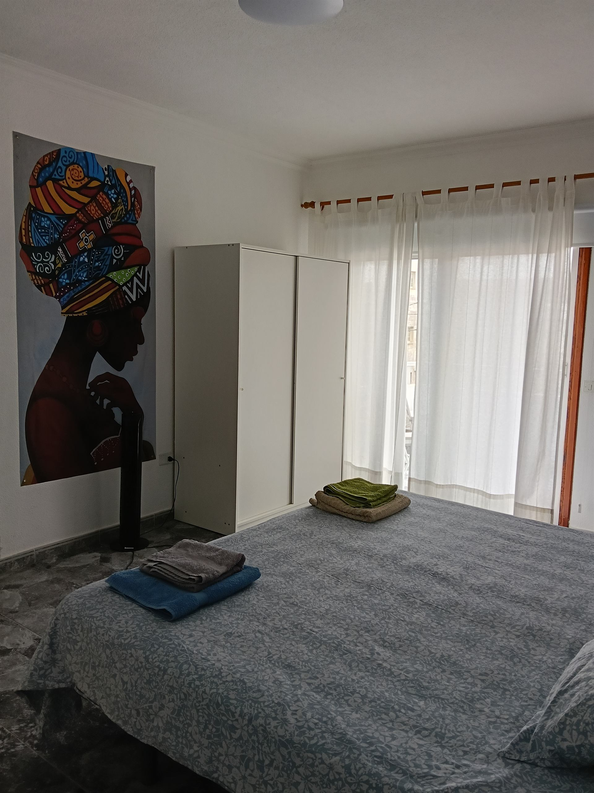
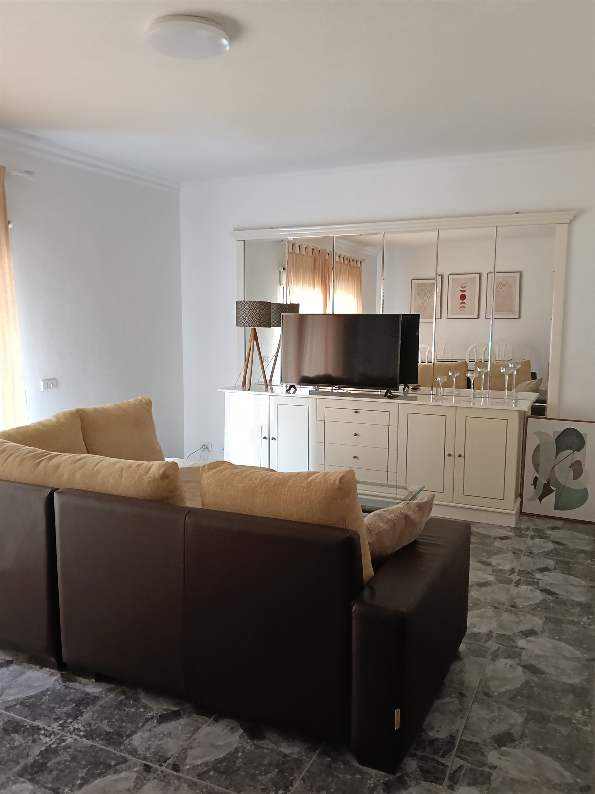

Galleria




Los Abrigos è una struttura ricettiva in formula ostello / edificio camere, situata nel centro del paese di Los Abrigos, una delle zone costiere più autentiche del sud di Tenerife.
La struttura è pensata per gruppi organizzati, tour operator, surfisti, sportivi e viaggiatori smart, con un'impostazione flessibile ma ordinata.
Suite con balcone e bagno privato, ideale per coordinatori, responsabili di gruppo o ospiti premium.
Appartamento indipendente con camera matrimoniale, adatto a soggiorni più lunghi o a figure chiave del gruppo.
Posti letto in dormitorio misto, con bagno condiviso, per completare la capacità del gruppo.
Area relax e socializzazione per il gruppo, con vista sulla costa.
Questa caratteristica rende Los Abrigos una soluzione ibrida alloggio + lavoro, molto apprezzata in contesti sportivi e creativi.
Contattaci per disponibilità e prezzi
💬 Contattaci su WhatsApp